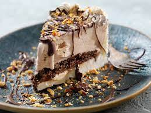

Ice Cream Cake

Description:
This ice cream sandwich cake was renamed as "The Best Dessert I've Ever Eaten" by my daughter this Memorial Day. I had made it before, but my husband ate all of it before she had a chance to get a taste! My husband doesn't like when I take this desert to a large gathering because it means he won't have any leftovers!
Ingredients:
- 24 vanilla ice cream sandwiches, unwrapped
- 2 (8 ounce) containers whipped topping (such as Cool Whip®), thawed
- 1 (12 ounce) jar hot fudge ice cream topping, warmed
- 1 (12 ounce) jar caramel ice cream topping
- ¼ cup chopped pecans, or to taste
Steps:
- Arrange a layer of ice cream sandwiches in the bottom of a 9x13-inch dish; top with a layer of whipped topping, hot fudge topping, and caramel topping. Repeat layering with remaining ice cream sandwiches, whipped topping, hot fudge topping, and caramel topping, ending with a top layer of whipped topping. Sprinkle with pecans.
- Cover the dish with aluminum foil and freeze until set, about 30 minutes.